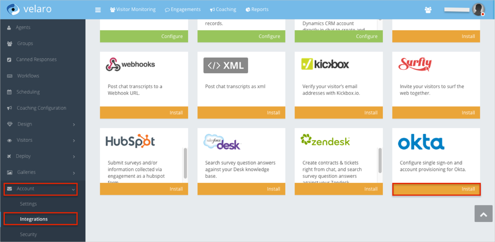
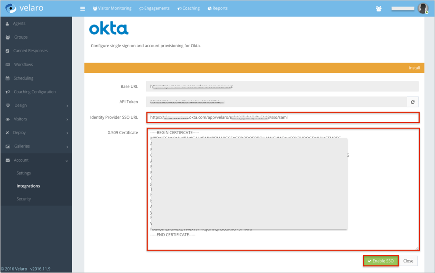
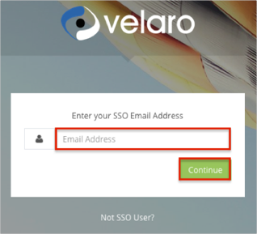

Log in to Velaro as an administrator.
Navigate to Account Setup > Account > Integrations.
Search for the Okta integration
Click Install.

Enter the following information:
Identity Provider SSO URL: Copy and paste the following:
Sign into the Okta Admin Dashboard to generate this variable.X.509 Certificate: Copy and paste the following (in PEM text format):
Sign into the Okta Admin Dashboard to generate this variable.
Click Enable SSO

Done!
Notes:
SP-initiated flows and IdP-initiated flows are supported.
Just In Time (JIT) provisioning is not supported.
Open the following URL: https://app.velaro.com/account/login
Click SSO User?.
Enter your Email Address.
Click Continue.
